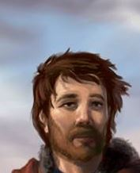

Second-Lieutenant Markuss Keidann is a Latvian commanding officer of the 3rd Courland Battalion (and later, Regiment) as a colleague of First-Lieutenant Wilks and acts as the main “protagonist” of the story. Born in 1895 in Aizpute and raised in the local baptist church, he was the oldest son of Mr. and Mme. Keidann and brother of Kriss Keidann, whom he had a rocky relationship.
Book 1 #
Act I
Markuss was born in Breezehome, the Keidann’s ancestral home near Aizputes Manor, in 1895. The first child of Abrams Keidann and Lavise Keidann, he grew up in the local baptist church. As a child he often accompanied his father in his work and church reunions, and was well-loved by both his parents and the other villagers of Aizpute.
He was greatly excited when he discovered he would have a brother, but due to Kriss' poor health, Markuss often found himself waiting for hours outside his door to play. He was very close to his paternal grandmother, who often told him stories about his ancestors, and was deeply affected when she passed away in 1900. Because of her stories, Markuss loved knights and often imagined swords when playing with sticks.
Markuss met the Andermann family in Christmas 1902 and quickly became friends with the Andermann brothers. He was also enrolled when the local school opened but due to his older age he never grew into a great student as his brother. He helped Anna emotionally when her mother was sick in 1904 and was devastated when the Andermanns moved away in following the 1905 Revolution.
During the 1905 Revolution in Aizpute, he escaped the protective curfew to meet Anna. In the same day, he gained his distinctive scar in his left cheek after he stood up to the Commander of a Russian Punitive Expedition, only to be saved from further physical punishment by a soldier. An experience that deeply inspired him to become a soldier and protect others.
Following 1905, his father started taking him to work in the manor and the fields to compensate for the lack of workers. Due to this, Markuss grew up as a hard working but lonely teenager. He also resented being expected to continue the Keidann tradition of being the steward of the local german manor and longed for a life of his own.
In his 18th Birthday in 1913, Markuss has an altercation with his Father - who seemingly forgot his birthday - only for him to revel his surprise: teaching how to hunt. While hunting Markuss expresses his wish to join the Russian Imperial Army, a decision which his father is hesitant to accept, warning Markuss that while he wants his son to follow his dreams, a career in the army is not what he may expect to be. Both men also discuss whether Kriss should be allowed to go study music in Riga’s Conservatory. For the first time, Markuss feels he talks to his father as an equal.
Later, his mother and father accompany him to the recruiting station in Jelgava, and Markuss is told by the recruiter of how the Army has enacted further restrictions on local minorities, but decides to enlist anyway. After his mother displays the first symptomps of tuberculosis in the travel back, Markuss shames Kriss for not helping the family.